Elektronik-Projekte
Einstellbarer Sinusgenerator | Retro-Kurzwellenradio zum Selberbauen | Frequenzmesser mit Analoganzeige
Digitaler 4-Bit Zähler | 80m-Empfänger | 2x40 Watt Endstufe
Einige der folgenden Projekte* stammen aus dem Buch "Von der Schaltung zum Gerät: Die 63 besten Elektronik-Projekte" von Max Perner und Frank Sichla. Es handelt sich hierbei um ein reines Elektronik-Bastelbuch, es macht sehr viel Spaß die Schaltungen selber nachzubauen und damit zu experimentieren, gerade für Einsteiger eine tolle Möglichkeit praktische Erfahrungen zu sammeln.
Einstellbarer Sinusgenerator*
Es kommt immer wieder die Situation, dass man ein abstimmbares Testsignal benötigt, z.B. um die Verstärkung einer Schaltung in Abhängigkeit von der Frequenz zu ermitteln. Der Sinusgenerator stellt folgende zwei Bereiche zur Verfügung: 200 Hz bis 2 kHz und 2 kHz bis 20 kHz, die sich mittels eines Kippschalters einstellen lassen. Wie man auf dem zweiten Bild sehen kann liefert die Schaltung ein sauberes Sinussignal. Es ist immer wieder spannend eine neue Schaltung zum ersten Mal einzuschalten ;-).
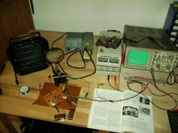 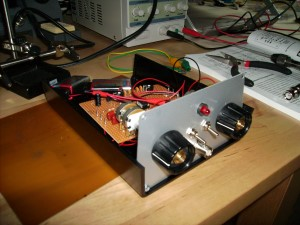 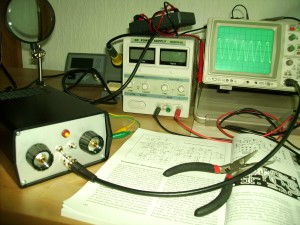{kind=link}
{kind=link}
{kind=link}
Retro-Kurzwellenradio zum Selberbauen
Ein einfaches Transistorradio mit Rückkopplungsregler, so wie man dies in früheren Zeiten hatte. Es handelt sich hier um ein Bausatz aus dem Franzis-Verlag, das ich beim Conrad günstig entdeckt habe.
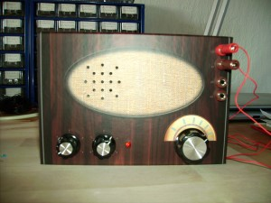 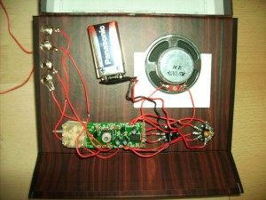 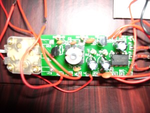{kind=link}
{kind=link}
{kind=link}
Frequenzmesser mit Analoganzeige*
Es lassen sich drei Frequenzbereiche einstellen: 30 Hz - 300 Hz, 30 - 3 kHz und 30 Hz - 30 kHz
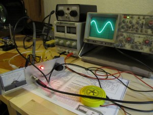 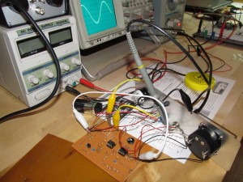 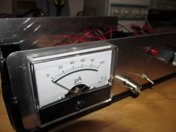
{kind=link}
{kind=link}
{kind=link}
Digitaler 4-Bit Zähler
Ein kleiner digitaler 4-Bit Zähler mit einem CMOS-IC 4060 (IC1) als Taktgeber. Der eigentlichte Zähler wurde mit zwei CMOS-IC 4013 (IC2 und IC3) Bausteinen realisiert. Im Video ist im Gegensatz zum Schaltplan noch ein Mikrotaster mit Entprellung zu sehen, damit kann der Takt auch manuell vorgegeben werden.
Schaltplan:
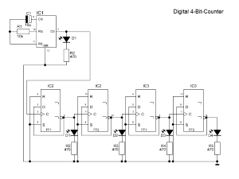{kind=link}
Und so sieht's aus:
80m-Empfänger
Hier entsteht ein einfacher Empfänger für 80m, dies ist auch wieder ein Projekt aus dem oben genannten Buch. Zuerst musste erst mal eine Platine her - diesmal wollte ich jedoch keine einfache Lochrasterplatine verwenden, sondern habe eine Kupferplatine geätzt. Und zwar bin ich hier nach der Fotolithografie-Methode vorgegangen. Im Detail:
- Platinenlayout auf Overhead-Folie mit einem einfachen Tintenstrahldrucker ausdrucken (am besten 2x und übereinander legen).
- Fotobeschichtete Kupferplatine etwa 2min mit UV-Licht (365nm) belichten.
- Belichtete Platine nun in NaOH entwickeln (1g auf 100mL).
- Ätzen mit Natriumpersulfat (ca. 300g auf 1L Wasser).
- Unter Wasser abspülen und restlichen Fotolack entweder mit Brennspiritus entfernen oder einfach nochmal belichten, aber diesmal ohne Vorlage.
- Das Kupfer der Platine mit Lötlack vor Oxidation und Schmutz schützen.
Eine gute und detaillierte Anleitung gibt es hier bei analog-synth.de.
Hier ein paar Bilder vom Ätzvorgang:
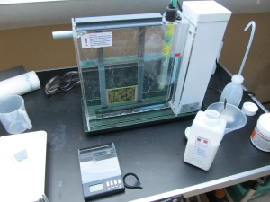 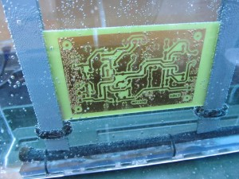 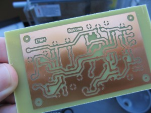{kind=link}
{kind=link}
{kind=link}
Da die Platine nun geätzt ist, müssen nur noch die Löcher rein.
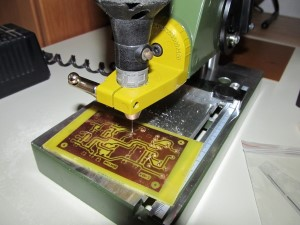 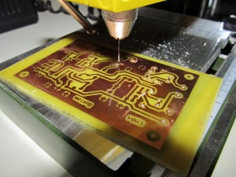 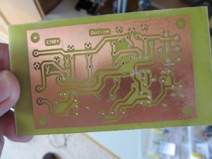{kind=link}
{kind=link}
{kind=link}
Das Projekt ist noch in Arbeit ;-)
2x40 Watt Endstufe
Das nächste Projekt ist ein NF-Verstärker mit 2x40 Watt. Zur Anwendung kommt der Verstärker-IC TDA 8560 Q, der mit 14,4-V Gleichspannung betrieben wird und gegen Überlast, Übertemperatur und Kurschluss geschützt ist. Die Ausgangs-Impedanz beträgt 2-4 Ohm, die Ruhestromaufnahme 120 mA und die Stromaufnahme bei Vollaussteuerung ca. 7,5 A.
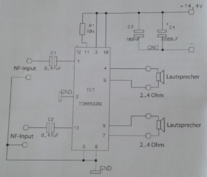
Quelle: Conrad
{kind=link}